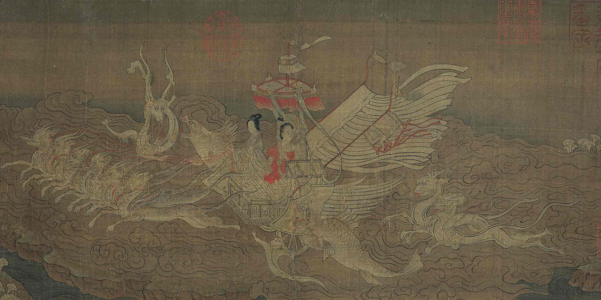
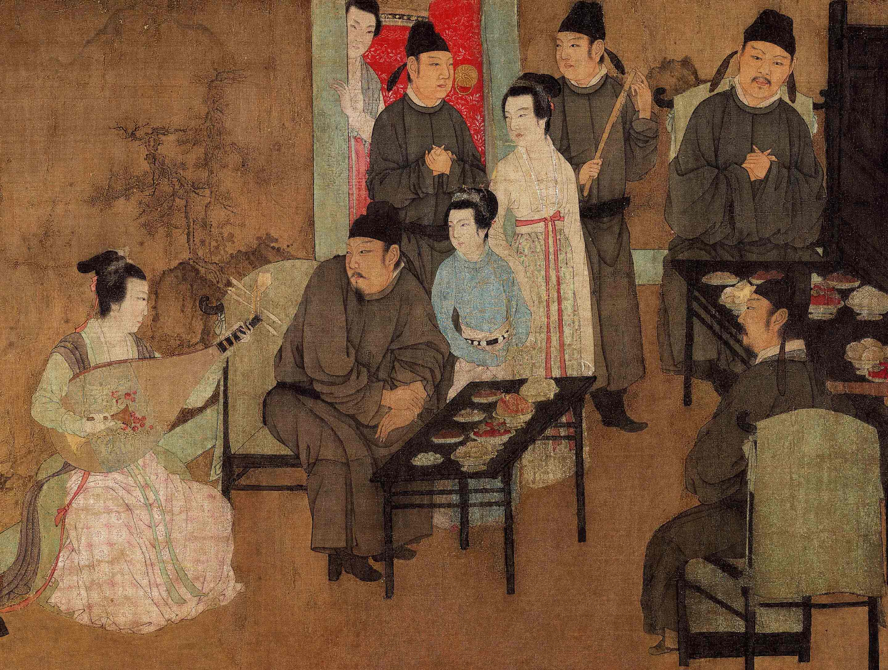
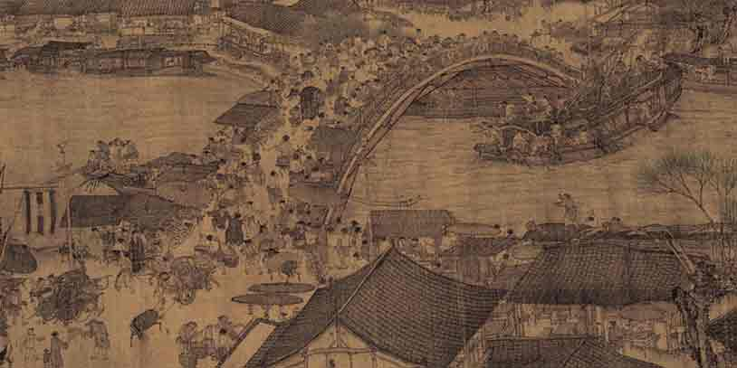
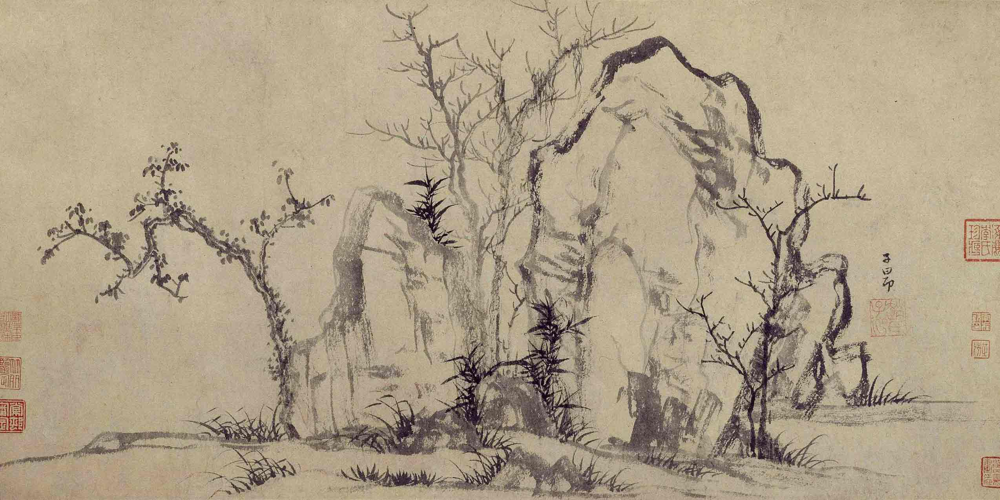
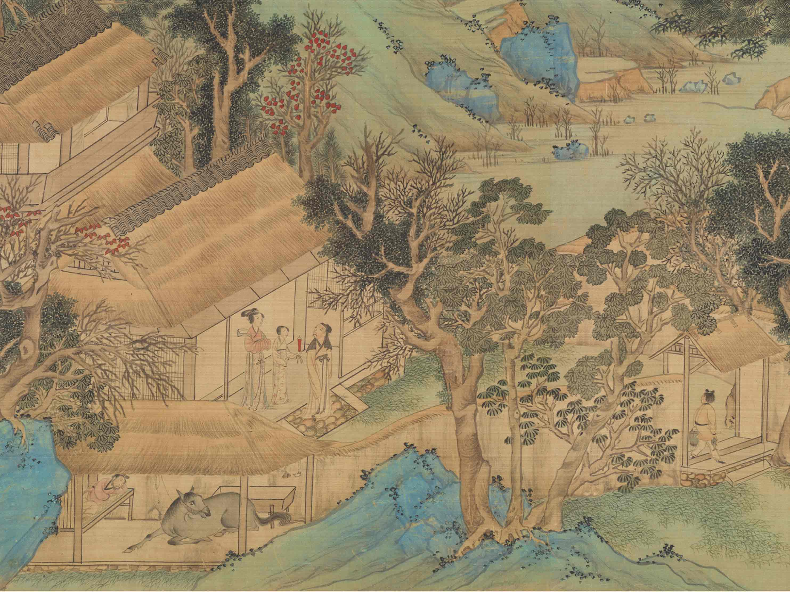
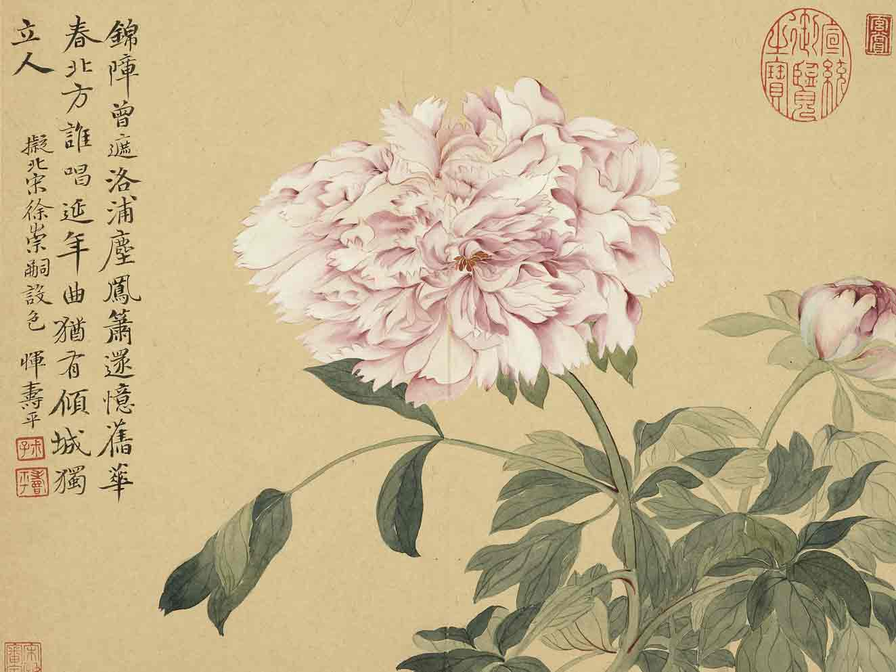
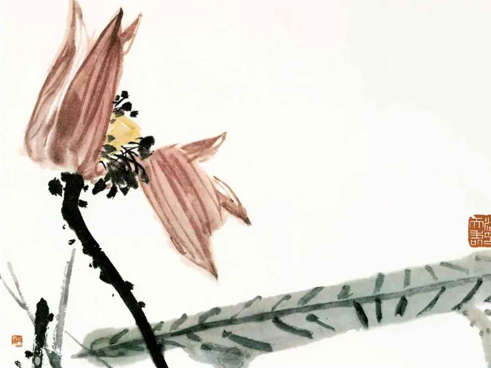

Early Chinese paintings were done on silk until the invention of paper around the 1st century. Silk was gradually replaced by more affordable materials. By the Eastern Jin Dynasty, painting and calligraphy within the Chinese court became the most esteemed art forms, mainly executed by nobles and scholars. Paintings were created using brushes made of animal hair and Chinese ink crafted from soot or animal glue. The works of renowned calligraphers were highly valued throughout Chinese history and often hung on walls like paintings. Early Chinese painting was closely intertwined with religion and beliefs.

Jin Dynasty, KaizhiGu, "Luo Shen Fairy"
Wei Jin Southern and Northern Dynasties
During the Six Dynasties period, people began appreciating the inherent beauty of painting and wrote treatises about it. While expressing Confucian ideals such as familial rituals, they also pursued aesthetic beauty in images, imbued with a sense of divine presence. Masterpieces like Gu Kaizhi's alleged works, "Admonitions of the Instructress to the Court Ladies" and "The Nymph of the Luo River," displayed ethereal beauty, transcending worldly matters.

Five Dynasty, HongzhongGu, "Han Xizai's Night Banquet"
Sui, Tang, and Five Dynasties
During the Sui and Tang Dynasties, court figure painting flourished, focusing on palace figures like emperors and court ladies, evident in Zhou Fang's works such as "Court Ladies Wearing Flowers in Their Hair" and "Court Ladies Preparing Newly Woven Silk." In the Southern Tang period, realistic techniques in figure painting reached their peak. Wu Daozi, known as a painting sage, revolutionized Chinese painting by employing the "Orchid-Leaf Technique," diverging from the prevalent Gu Kaizhi school. Landscape paintings increased during the Tang Dynasty, dividing into two schools: Li Zhaodao's "Blue-Green Landscape" and Wang Wei's "Ink Wash Landscape."

Song Dynasty, ZheduanZhang, "Along the River During Qingming Festival"
Song Dynasty
In the Song Dynasty, landscape depictions became more ambiguous, emphasizing Daoist and Buddhist ideologies of unity between heaven and humanity. Renowned painters like Zhang Zeduan, the creator of the "Along the River During the Qingming Festival," and Xia Gui, famous for landscape paintings, thrived. Aside from artists focusing on representing three-dimensional objects, others delved into the inner spiritual essence rather than the materialistic appearance of subjects.

Yuan Dynasty, MengfuZhao, "Beautiful Rocks and Sparse Forest"
Yuan Dynasty
During the Yuan Dynasty, literati painters, represented by Zhao Mengfu and Gao Kegong, advocated a return to Tang and Northern Song painting traditions, blending calligraphy with painting, fostering a poetic and subjective style. The literati landscape style in Chinese painting emerged, emphasizing reclusive landscapes and symbolic representations like plum, orchid, bamboo, chrysanthemum, pine, and rocks.

Ming Dynasty, ZhengmingWen, "ChiBi County“
Ming Dynasty
In the early Ming Dynasty, painters sought to revive and transform Song Dynasty painting styles. The "Zhe School," led by Dai Jin, was influential. During the mid-Ming period, Suzhou formed the "Wu School," with Shen Zhou, Wen Zhengming, Tang Yin, and Qiu Ying being prominent figures, portraying elegant lives of Jiangnan literati. In the late Ming Dynasty, scholar-official literati painting evolved towards expressing individual spirits, embracing painting as a leisure activity and means of expression.

Qing Dynasty, ShoupingHui, "Peony“
Qing Dynasty
In the early Qing Dynasty, individualistic painters emerged, breaking away from traditional painting practices for more freedom. By the 17th and 18th centuries, commercial cities like Yangzhou and Shanghai became artistic hubs due to continuous innovations supported by merchants. Later in the 18th and 19th centuries, Chinese painters encountered Western art, leading some to abandon traditional Chinese art, while others aimed for a fusion. Qi Baishi, born into a peasant family, stands out among them.

Modern Era, TianshouPan, "lotus"
Modern Era
Since the New Culture Movement, Chinese painters began experimenting with Western techniques, and oil painting was introduced. In the early People's Republic of China, artists were encouraged to pursue socialist realism. The traditional Chinese painting experienced a revival during the Hundred Flowers Campaign. Art schools were closed during the Cultural Revolution, causing significant damage to Chinese art. After the Cultural Revolution, art academies and professional groups were reinstated, and Chinese artists explored new themes and techniques while establishing connections with foreign art groups.
location_onVisit Beijing Palace museum to see a real Art work：